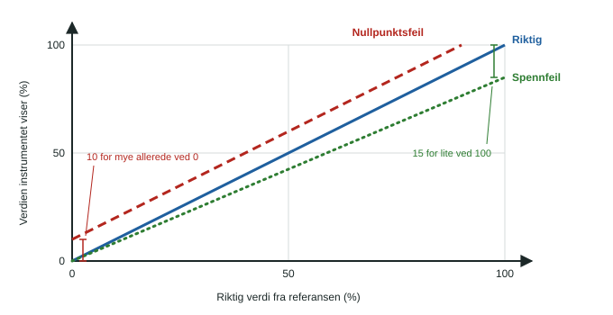

Hvorfor kalibrere?
Alle beslutninger i anlegget og på laben bygger på tall fra instrumenter. Men et instrument kan vise feil uten at du merker det. Kalibrering er måten vi sjekker at tallene er til å stole på. Her lærer du hva kalibrering er, hvorfor instrumenter begynner å vise feil, og hvordan vi avgjør om en feil er liten nok.
Hva er kalibrering?
På siden Hvorfor vi måler i Automasjon så du at et måleinstrument kan vise feil. For å finne ut om det gjør det, sammenligner vi det med en referanse. En referanse er noe vi vet viser eller har riktig verdi, for eksempel en trykkmåler som selv er kalibrert, eller en bufferløsning med kjent pH. Referansen kalles også en standard.
Kalibrering er å sammenligne et instrument med en referanse og justere det ved behov, slik at det måler riktig. En kalibrering har tre steg:
- Sammenligne: Du gir instrumentet en kjent verdi fra referansen og leser av hva instrumentet viser. Det gjøres ofte på flere punkter i måleområdet, for eksempel ved 0 %, 50 % og 100 %.
- Justere ved behov: Er feilen for stor, stiller du instrumentet slik at det viser riktig. Det kalles justering. Går det ikke, må instrumentet repareres eller byttes.
- Dokumentere: Du skriver ned hva instrumentet viste før og etter, hvilken referanse du brukte, dato og hvem som gjorde jobben. Det lærer du mer om på siden «Kalibreringsprotokoll og dokumentasjon» senere i emnet.
Strengt tatt er kalibrering bare selve sammenligningen, og justeringen er et eget steg. I det daglige bruker vi ordet kalibrering om hele jobben.
Hvorfor begynner instrumenter å vise feil?
Et nytt instrument er stilt inn riktig fra fabrikken. Likevel begynner nesten alle instrumenter å vise litt feil etter en tid. Det kan skyldes
- slitasje og aldring: Følere og elektroder blir dårligere med tiden. Elektroden i et pH-meter er et typisk eksempel.
- belegg og smuss: Kalk, olje eller produkt legger seg på føleren, slik at den reagerer annerledes.
- temperatur og vibrasjon: Mange instrumenter tåler ikke store temperaturendringer eller risting over lang tid.
- støt og feil bruk: En vekt som blir flyttet, eller en giver som får et slag, kan vise feil med en gang.
Ofte skjer endringen så sakte at ingen merker den fra dag til dag. At et instrument gradvis viser mer og mer feil over tid, kalles avdrift. Avdrift er hovedgrunnen til at instrumenter må kalibreres jevnlig, også når de ser ut til å virke fint.
Målefeil og toleranse
Målefeilen er forskjellen mellom det instrumentet viser og den riktige verdien fra referansen:
\[ \text{målefeil} = \text{vist verdi} - \text{riktig verdi} \]
Er målefeilen positiv, viser instrumentet for mye. Er den negativ, viser det for lite.
Ingen instrumenter er helt perfekte. Derfor har hvert instrument en toleranse, altså hvor stor målefeil som er godtatt. Toleransen står i instruksen eller vedlikeholdsplanen, for eksempel ±0,5 °C for en temperaturgiver. Er målefeilen innenfor toleransen, er instrumentet godkjent. Er den utenfor, må instrumentet justeres.
To vanlige typer feil
Når du sammenligner på flere punkter, kan du se hvordan instrumentet viser feil. To typer går igjen:

- Nullpunktsfeil: Instrumentet viser like mye for mye, eller for lite, over hele måleområdet. En vekt som viser 0,3 g når den er tom, har nullpunktsfeil.
- Spennfeil: Instrumentet viser riktig i den ene enden, men feilen vokser jo lenger opp i måleområdet du kommer. Ordet kommer av spenn, som er avstanden mellom laveste og høyeste verdi i måleområdet.
Et instrument kan ha begge feilene samtidig. Derfor sjekker vi helst minst to punkter, ett nederst og ett øverst i måleområdet. Med bare ett punkt kan du ikke se forskjell på de to feilene.
Regneeksempel
Oppgave: En temperaturgiver i en reaktor har måleområde 0–100 °C og toleranse ±0,5 °C. Automatikeren setter føleren i en kalibreringsovn, en metallblokk som kan varmes eller kjøles til en kjent temperatur, og sammenligner med et kalibrert referansetermometer. Resultatet:
| Riktig verdi (referanse) | Vist verdi |
|---|---|
| 0,0 °C | 1,5 °C |
| 50,0 °C | 51,4 °C |
| 100,0 °C | 101,6 °C |
Er giveren godkjent? Hvilken type feil har den?
Løsning:
- Regn ut målefeilen i hvert punkt: 1,5 − 0,0 = +1,5 °C, 51,4 − 50,0 = +1,4 °C og 101,6 − 100,0 = +1,6 °C.
- Sammenlign med toleransen: Alle feilene er større enn 0,5 °C. Giveren er ikke godkjent.
- Se på mønsteret: Feilen er omtrent like stor, rundt +1,5 °C, i hele måleområdet. Det er en nullpunktsfeil.
Svar: Giveren viser omtrent 1,5 °C for mye overalt og er utenfor toleransen. Automatikeren justerer nullpunktet og sjekker de tre punktene på nytt. Begge målingene, før og etter, skrives i kalibreringsprotokollen.
Hva betyr det for driften? Reaktoren skal holde 80 °C. Med denne feilen viser skjermen 80 °C når det egentlig er omtrent 78,5 °C i reaktoren. Det kan være nok til at reaksjonen går saktere og produktet blir dårligere.
Hva skjer hvis vi ikke kalibrerer?
Et instrument som viser feil, rammer de samme målene som drift skal nå, se Hva er drift?:
- Sikkerhet: Alarmer og forriglinger reagerer på måleverdien. Viser en nivåmåler for lite, kan tanken gå full før alarmen kommer. Se eksemplet med overfylling i HMS.
- Kvalitet: Feil temperatur, trykk eller pH i prosessen gir produkt utenfor spesifikasjonen. Feil på et laboratorieinstrument gir analysesvar som ikke stemmer, og da kan dårlig produkt bli godkjent.
- Miljø: Utslipp måles for å vise at bedriften holder kravene. Er måleren feil, vet ingen om kravene holdes.
- Kostnad: En mengdemåler som viser for lite, gjør at du bruker mer råstoff eller selger mer produkt enn du tror.
- Tillit og krav: Kunder og myndigheter krever ofte å få se at instrumentene er kalibrert. Uten dokumentasjon kan ikke bedriften bevise at målingene er riktige.
Sporbarhet: hvem kalibrerer referansen?
En referanse er bare til å stole på hvis den selv er riktig. Derfor er også referansene kalibrert, mot en enda bedre referanse. Slik henger det sammen i en kjede:
- Instrumentet i anlegget eller på laben kalibreres mot bedriftens referanse.
- Bedriftens referanse sendes jevnlig til et kalibreringslaboratorium.
- Kalibreringslaboratoriet kalibrerer sitt utstyr mot den nasjonale standarden. I Norge har Justervesenet ansvaret for de nasjonale normalene, altså de nasjonale standardene.
At en måling kan følges trinn for trinn gjennom en slik kjede, kalles sporbarhet. Referansen bør også være flere ganger mer nøyaktig enn instrumentet du kalibrerer. Du kan ikke sjekke en temperaturgiver med toleranse ±0,5 °C mot et termometer som selv kan vise 1 °C feil.
Hvor ofte skal det kalibreres?
Hvor lang tid det går mellom hver kalibrering, kalles kalibreringsintervallet. Det står i vedlikeholdsplanen, se Systematisk vedlikehold. Intervallet bestemmes ut fra
- hvor viktig målingen er. Instrumenter som brukes i sikkerhetsfunksjoner, kalibreres oftere.
- hvor fort instrumentet pleier å få avdrift. Et pH-meter på laben kalibreres ofte hver dag det brukes, mens en trykkgiver i anlegget kanskje kalibreres én gang i året.
- hva tidligere kalibreringer har vist. Har instrumentet vært innenfor toleransen mange ganger på rad, kan intervallet kanskje gjøres lengre. Har det vært utenfor, gjøres det kortere.
I tillegg kalibreres et instrument etter reparasjon, etter et støt eller en flytting, og når du mistenker at det viser feil. Kalibrering etter fast plan er et eksempel på tidsbasert vedlikehold, se Typer vedlikehold.
- Kalibrering i anlegget påvirker styresystemet. Mens en giver kalibreres, sender den verdier som ikke er ekte måleverdier. Regulatoren må settes i manuell, og forriglingene på den målingen må forbikobles etter prosedyren, og kontrollrommet må vite om jobben. Se Signalet 4–20 mA i Automasjon.
- Arbeid på instrumenter krever tillatelse. En giver som skal tas ut, sitter ofte på en tank eller et rør med trykk og kjemikalier. Den må stenges av og trykkavlastes først, se Sikker jobbing ved vedlikehold.
- Husk å fjerne forbikoblingen. En forrigling som er glemt forbikoblet etter kalibreringen, er en barriere som ikke virker. Se Forriglinger i Automasjon.
Kjøkkenvekta har en knapp som setter den til null. Trykker du på den mens vekta er tom, retter du opp en liten nullpunktsfeil. Det er en enkel justering. Og hvis klokka på komfyren går fem minutter for fort, sammenligner du den med klokka på mobilen og stiller den. Mobilen er referansen, og den får tiden sin fra et sporbart klokkesystem.
På de neste sidene lærer du hvordan kalibrering gjøres i praksis, først på laboratorieutstyr og så på instrumenter i anlegget.
Test deg selv
1. Hva er kalibrering?
- Å bytte ut et instrument som er gammelt
- Å sammenligne et instrument med en referanse og justere det ved behov, slik at det måler riktig
- Å rengjøre føleren på et instrument
Ved kalibrering sammenligner du instrumentet med noe som har kjent, riktig verdi. Er feilen for stor, justeres instrumentet. Til slutt dokumenteres resultatet.
2. Et pH-meter står i en bufferløsning med pH 7,00 og viser 7,12. Toleransen er ±0,05. Hva er riktig?
- Målefeilen er −0,12, og pH-meteret er godkjent.
- Målefeilen er +0,12, og pH-meteret er godkjent.
- Målefeilen er +0,12, og pH-meteret må justeres.
Målefeil = vist verdi − riktig verdi = 7,12 − 7,00 = +0,12. Det er mer enn toleransen på 0,05, så pH-meteret må justeres før det brukes.
3. En trykkgiver viser 0,3 bar for mye både ved 0 bar, 5 bar og 10 bar. Hvilken type feil er det?
- Nullpunktsfeil
- Spennfeil
- Ingen feil, siden feilen er like stor overalt
Når feilen er like stor over hele måleområdet, er hele linja flyttet opp. Det er en nullpunktsfeil. Ved spennfeil blir feilen større jo høyere opp i måleområdet du kommer.
4. Hvorfor må instrumenter kalibreres jevnlig, selv om de virker fint?
- Fordi de alltid viser feil fra fabrikken
- Fordi de kan få avdrift og gradvis vise mer feil uten at noen merker det
- Fordi kalibrering gjør at instrumentet varer lenger
Avdrift skjer så sakte at du ikke ser det fra dag til dag. Bare en sammenligning med en referanse avslører det.
5. Hva betyr sporbarhet?
- At instrumentet har et tagnummer, så du finner det i anlegget
- At målingen kan føres tilbake til den nasjonale standarden gjennom en ubrutt kjede av kalibreringer
- At måleverdiene lagres, så du kan se dem i ettertid
Sporbarhet betyr at du kan følge kalibreringene trinn for trinn fra instrumentet ditt, via bedriftens referanse og et kalibreringslaboratorium, til den nasjonale standarden.
Ordliste
| Begrep | Forklaring | Engelsk |
|---|---|---|
| kalibrering | Å sammenligne et instrument med en kjent standard og justere det ved behov, slik at det måler riktig. | calibration |
| referanse | Et instrument eller et stoff med kjent, riktig verdi, som andre instrumenter sammenlignes med. Kalles også standard. | reference standard |
| justering | Å stille et instrument slik at det viser riktig, etter at kalibreringen har vist at feilen er for stor. | adjustment |
| avdrift | At et instrument gradvis viser mer og mer feil over tid, uten at noen har endret på det. | drift |
| målefeil | Forskjellen mellom det instrumentet viser og den riktige verdien: vist verdi minus riktig verdi. | measurement error |
| toleranse | Hvor stor målefeil som er godtatt for et instrument, for eksempel ±0,5 °C. | tolerance |
| nullpunktsfeil | Feil der instrumentet viser like mye for mye eller for lite over hele måleområdet. | zero error |
| spennfeil | Feil der instrumentet viser riktig i den ene enden av måleområdet, men feilen vokser mot den andre enden. | span error |
| sporbarhet | At en måling kan føres tilbake til den nasjonale standarden gjennom en ubrutt og dokumentert kjede av kalibreringer. | traceability |
| kalibreringsintervall | Tiden mellom to kalibreringer av samme instrument. | calibration interval |
Les mer
- Hvorfor vi måler i Automasjon: måleverdi, måleområde og hvorfor du ikke kan stole blindt på en måling.
- Givere og transmittere i Automasjon: instrumentene som kalibreres i anlegget.
- Systematisk vedlikehold: vedlikeholdsplan og loggbok, der kalibreringene planlegges og føres.
- Usikkerhet og feilkilder i analyser kommer i emnet Rapportering og kvalitet i Laboratorium og analyse (kommer).
Om kildene: Teksten, eksemplet og figuren på denne siden er laget for dette nettstedet. Siden bygger på undervisningsopplegg i kjemiprosess- og laboratoriefag ved Sauda vgs, som er utarbeidet med utgangspunkt i blant annet Kjemien stemmer, Laboranten og åpne nettkilder.